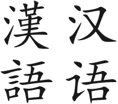

Learning Basic Chinese 学基本中文 (xué jī běn zhōng wén)
| Tone Marks | |
|---|---|
| First | ā |
| Second | á |
| Third | ǎ |
| Fourth | à |
| Neutral | a |
Pinyin and Characters
Pinyin use the tone marks to indicate the corresponding characters. More than one character can be in the same form of Pinyin, with the same tone marks.
Side Note:
汉语 (hàn yǔ) is also known as 中文 (zhōng wén),
and both translates as "Chinese" as of the
Chinese language.
A little about the site:
- Provides related information on the four tone marks 声调标注 (shēng diào biāo zhù) and the neutral tone, Pinyin 拼音 (pīn yīn), and some of the (basic) Chinese characters 汉字 (hàn zì).
- Simplified Chinese 简体中文 (jiǎn tǐ zhōng wén) is used for translation.
- Contents will be translated from English 英文 (yīng wén) to Chinese 中文 (zhōng wén) and Chinese to English as seen suitable.
- Links and videos are either linked or embedded, such as the one at the bottom of the page, is used to enhance learning experiment.
- The underlined words from the Lyrics pages, within the Music Videos page, may be translated. May also be used to form new sentences or further explained to better comprehend the characters and phrases.
Traditional vs Simplified:
As the image showed below, the traditional characters, the left ones (漢語 hàn yǔ), are usually more difficult to write as it has more strokes than the simplified characters, the right ones (汉语 hàn yǔ). It is also common to see the same characters used in both traditional and simplified Chinese.
| Weather (tiān qì) | |
|---|---|
| Traditional | Simplified |
| 天氣 | 天气 |
In this case, the word "天 (tiān)", sky, is the same in both traditional and simplified Chinese. As for the character "气/氣 (qì)", air, it has more strokes in the traditional form, 氣, than in the simplified form, 气.
The Most Effective Way to Learn Mandarin Tones - Tone Pairs - Google Hangout with Yangyang
Video uploaded by: Yangyang Cheng